{kind=link}
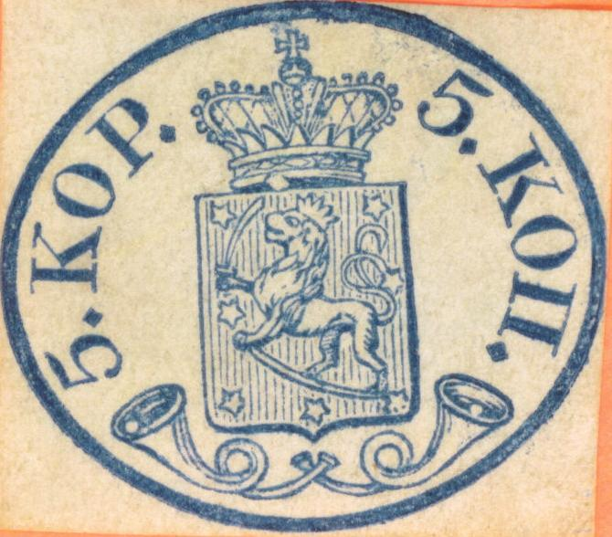
{kind=link}
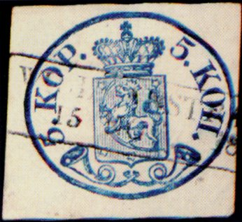


(I presume all the above stamps are genuine)
Suomi - Finlande - Finnland
Return To Catalogue - Finland 1860-1874 - 1875-1890 issues - 1891-1916 issues - 1917 onwards - Aunus - Carelia - Local issues for Helsingfors and Tammerfors - Finland Railway and Ferry stamps
Note: on my website many of the
pictures can not be seen! They are of course present in the
catalogue;
contact me if you want to purchase the catalogue.
 
(I presume all the above stamps are genuine)

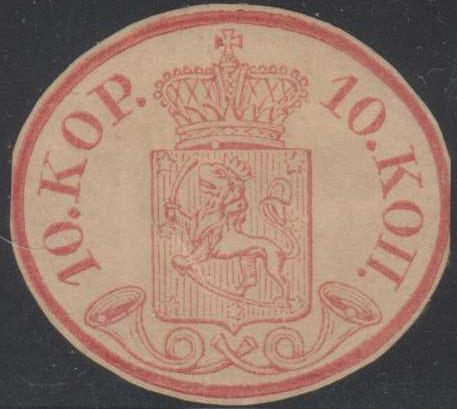
These might be reprints?
5 Kopecks blue 10 Kopecks red
Tete-beche stamps exist (always head to head).
Value of the stamps |
|||
vc = very common c = common * = not so common ** = uncommon |
*** = very uncommon R = rare RR = very rare RRR = extremely rare |
||
| Value | Unused | Used | Remarks |
| 5 k | RRR | RRR | |
| 10 k | RRR | R | |
| Reprints (both values) | *** | - | |
Typical pen cancel
For the specialist, there are stamps with very small pearls (first printings) and large pearls inside the posthorn. The stamps were printed with the same die which existed for the envelopes. In the genuine stamps, there are 4 diamond shaped points after the figures and text. Reprints of these stamps exist, made in 1862, 1871 and 1881 with the original die. All reprints have large pearls. The 1862 reprint includes the tete-beche stamps.

1862 reprint
Example of a reprint of 1881:
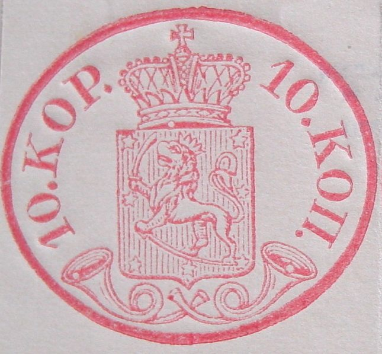
1881 reprint, image obtained thanks to Marko Ylostalo, Finland;
note the 'bite' typical for the engraved printing process at the
elliptic part.
In some reprints of the 5 k a dot appears in the right hand side of the cross on the crown. In the 10 k reprints, sometimes the left hand part of this cross shows a dot in this crown (as shown above). A nice site on reprints and forgeries can be found at: http://www.scc-online.org/Fraser_Finland_Study/Oval%20Issue%20Forgeries+photos-3-25-06.html
A lithographed reprint was made in 1892 in sheets of 20 (with no tete-beche stamps). Finally, in 1956, reprints were made for the book: 'Finlands Ovalmärken'. These 1956 reprints have a watermark (posthorn).


Reprints of 1956, distributed with the book “Finlands
Ovalmärken”, these reprints have watermark 'posthorn'. Note
the break in the shield at the left hand side just besides the
central star of the 10 k reprint.
Commemorative stamps issued in 1931 with similar designs; 1 1/2 M
red and 2 M blue
Genuine stamps are engraved. All forgeries (and some reprints) are lithographed. This results in the oval shape showing the 'impression' of the engraving in most genuine stamps. A lack of such an impression is common for the lithographed forgeries.
A nice site on reprints and forgeries can be found at: http://www.scc-online.org/Fraser_Finland_Study/Oval%20Issue%20Forgeries+photos-3-25-06.html


(Reduced size)
The above stamps are often referred to as Fournier forgeries. Although Fournier sold these forgeries, they were actually produced by Spiro.
I've seen on the Spiro forgeries the cancels:
a bogus cancel 'HELSINGFORS', diameter 25 mm, in two concentric
circles (see pictures above, this fantasy cancel was never used
in Finland)
'HELSINGFORS' in a rectangle: 35x12 mm
These forgeries must be quite common, I have even seen blocks of 4 of both values with two different cancels (Helsingfors in a circle and Helsingfors in a rectangle, see image below). A whole sheet of 25 stamps (5 x 4) can be found on the cover of the book: 'Forgeries of Finnish Postage Stamps' by Mikka Ossa (both in Finnish and English). The two above mentioned cancels are both applied to this sheet.
Blocks of these forgeries with different cancels.
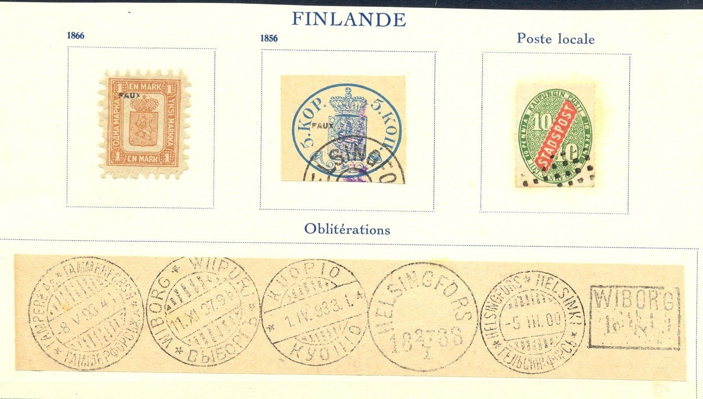
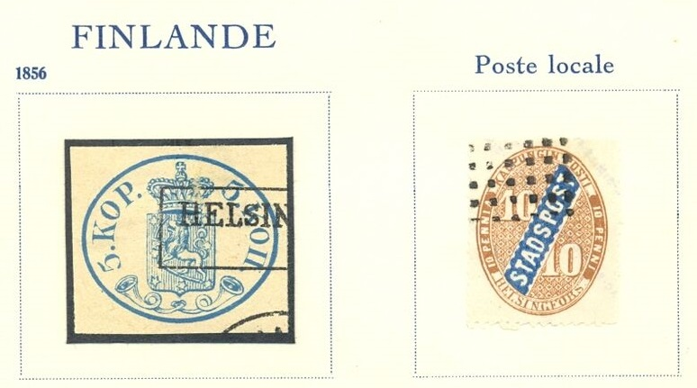
Cancels used by Fournier:
"WIBORG" in a rectangle with unreadable date: size
23x16 mm
"EKENAS APR 3 1856" in a rectangle: size 27x10 mm

(Fournier forgery, 1st choice)
(Wiborg Fournier forged cancel, the date is unrecognizable,
reduced size)
Fournier offered two versions of these forgeries, he offers the 5 k 1st choice as he calls it in his 1914 pricelist for 1 Swiss Franc. Both values could also be bought as 2nd choice for 1 Swiss Franc both. I presume the Wiborg and Ekenas cancels only appeared on the 1st choice forgeries. As mentioned above, Fournier's second choice forgeries were actually products made by the Spiro brothers in Hamburg.
More information on these Fournier forgeries can be found at: http://personal.inet.fi/surf/hff/fournier.html.

Forgeries apparently made by the same forger. The inscription on
the right hand side reads 'KOIL'! I've only seen it with the
above shown cancel; part of a very large circle.
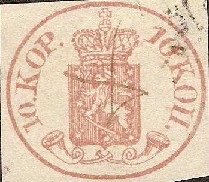
A very primitive forgery, the letters are all different (compare
for example the '1's), the horns are too narrow etc. I've also
seen this forgery with a blotchy circular cancel.
Other forgeries:

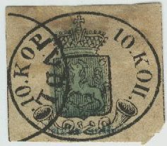


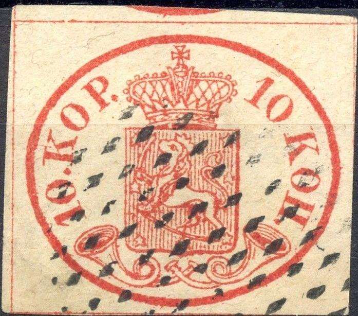
Forgery with framelines outside the design (genuine stamps don't
have framelines). Also note the strange cancels.
In this forgery the head of the lion is not facing upwards

Primitive forgery with letters all different.
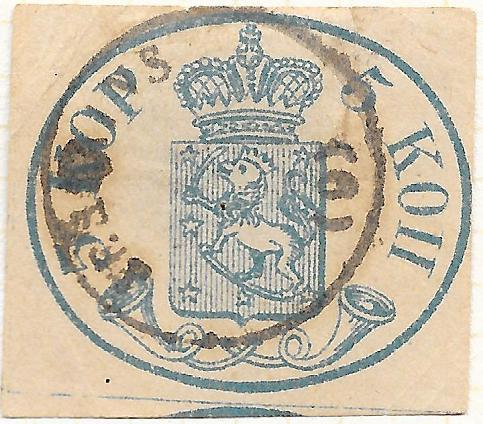 
Primitive forgery, no dots behind "5" and
"KOP"


Same forgery as shown above with bar cancels and a 10 k forgery
made by the same forger with "APRES LE DEPART 2822" box
cancel; note the wide space between the bottom of the arms and
the mouths of the horns. I've also seen the 10 k forgery with
several numeral cancels (the one shown here, but also a similar
-93- numeral cancel). One of the front legs of the lion appears
to be broken.
Forgery with "FR.KO" cancel, reduced size
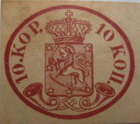
A forgery of the 10 k value with the text "10 KOP" too
close to the left frameline. Possibly made by Oneglia?
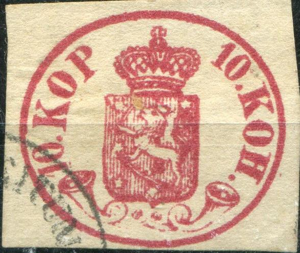


Primitive forgery of the 10 k value with a "H" instead
of the Russian "P" and forgery of the 5 k and 20 k
envelope made by the same forger; I've also seen this forgery
with a blur circular cancel. Also with a "ZEITUNGS
EXPEDITIONS" cancel.


As above. Forgery with no "." behind the left
"5" and the bottom of the arms not placed symmetrically
above the mouths of the horns.


Two other forgeries, with framelines. Note the blur circular
cancels, which are (always?) applied to these forgeries. Also,
there are square framelines outside the design, which do not
exist in genuine stamps.
All three above stamps seem to have exactly the same blur "VF" cancel, which can also be found on forgeries of other countries. I've also seen a variety of this forgery of the 5 k value without a dot behind the left '5'. These forgeries have framelines, which are missing in the genuine stamps.
Modern forgeries made by Peter Winter (around 1980):

Peter Winter forgeries. There is a
white dot in the outer ellipse of the 10 k value above the right
hand side of the crown. The 5 k value has some white smudges in
the lower part of the outer ellipse, just below the right
posthorn. The "K" of the left "KOP" in the 5
k is different from a genuine stamp. I've also seen the 5 k with
pencancel.
Other Winter products with (sometimes blur) "WIBORG 18 19 7 58" in a box cancel (with inverted colours!) and a very blur circular cancel "....STAD":
Winter also forged 'inverted' color varieties.
I've seen two 10 k red Peter Winter forgeries on a forged letter with the "WIBORG 18 10 7 59" cancel as shown above.
Sheets of Winter forgeries.
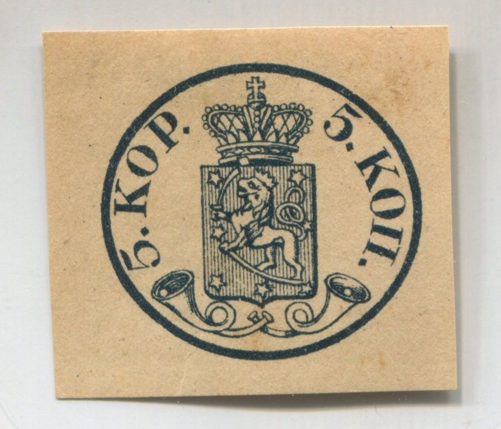
Forgery with the left "KOP" too close to the frameline.
Envelopes in the same design were already issued in 1850 with no white dots inside the posthorns (values 5 k blue, 10 k red and 20 k black). The 20 k is extremely rare. Reprints of all these envelopes exist. In 1856 other envelopes with white dots inside the posthorns were issued (values 5 k blue and 10 k red). The envelopes in the values 5 k and 10 k were 'demonetized' in 1860. A cross was applied on the ellipse and a new value of 5 k was printed on the other side of the envelope (in the 1860 5 kop arms design).
An envelope in the same design:
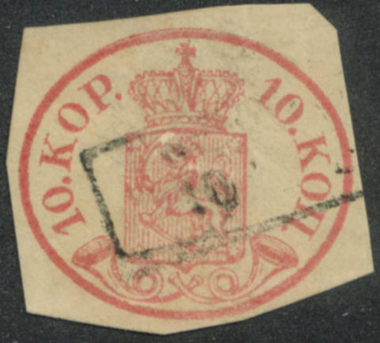
(Cuts from envelope; no pearls in the large openings of the
posthorns and no secret mark between the shield and the crown)

Cut from envelope with pearls in posthorns and secret mark
between shield and crown.
Possibly a reprint of a rare 20 k envelope
For issues of Finland from 1860 to 1874 click here.
{kind=link}
{kind=link}
{kind=link}
{kind=link}
{kind=link}
{kind=link}
{kind=link}
{kind=link}
{kind=link}